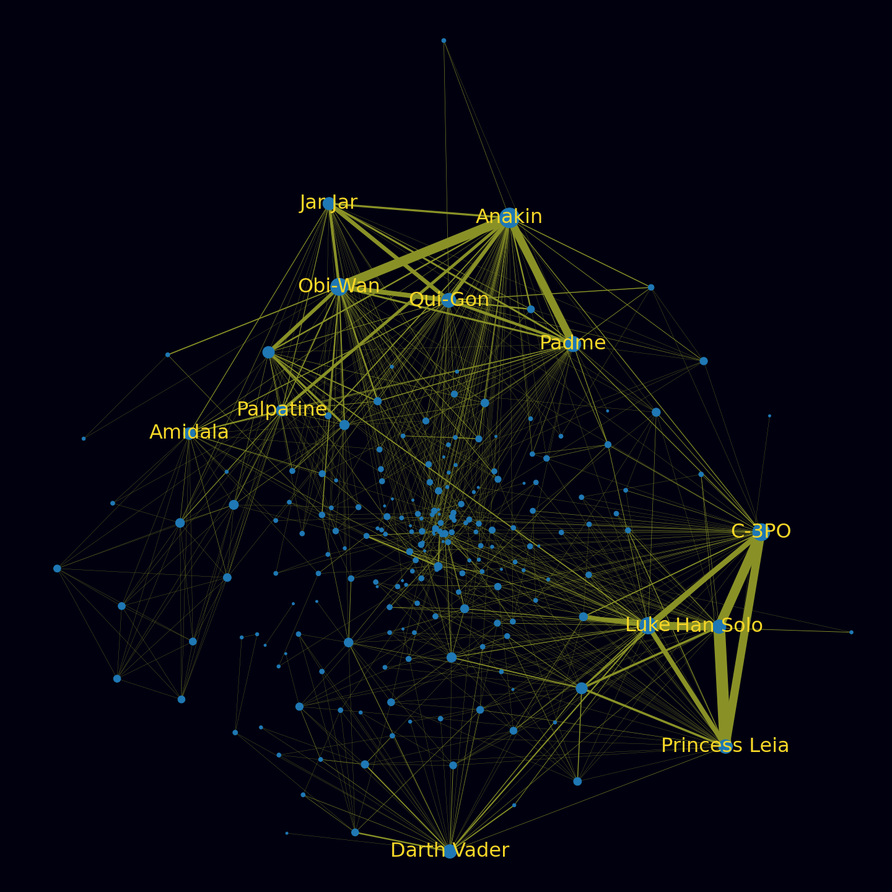
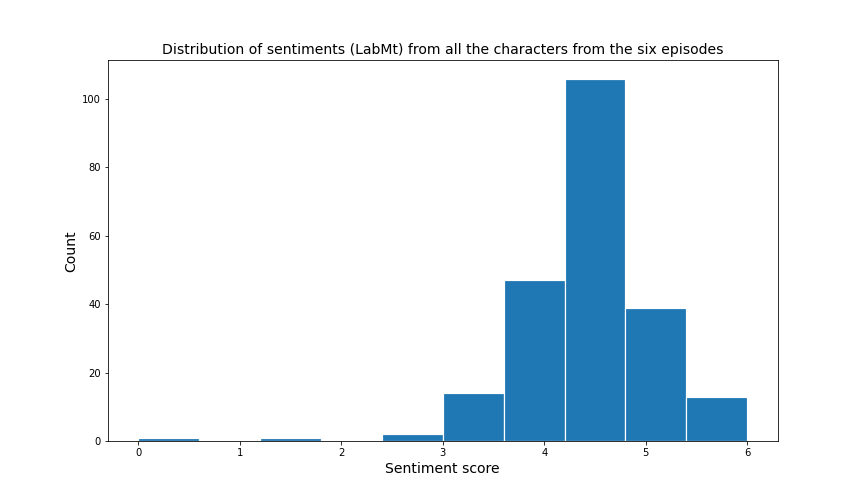
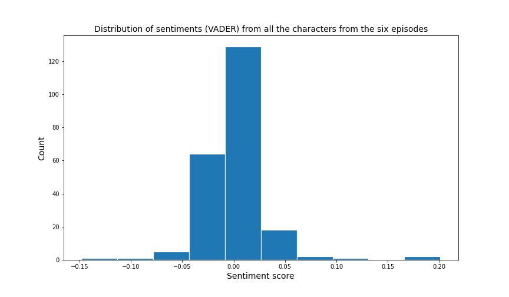
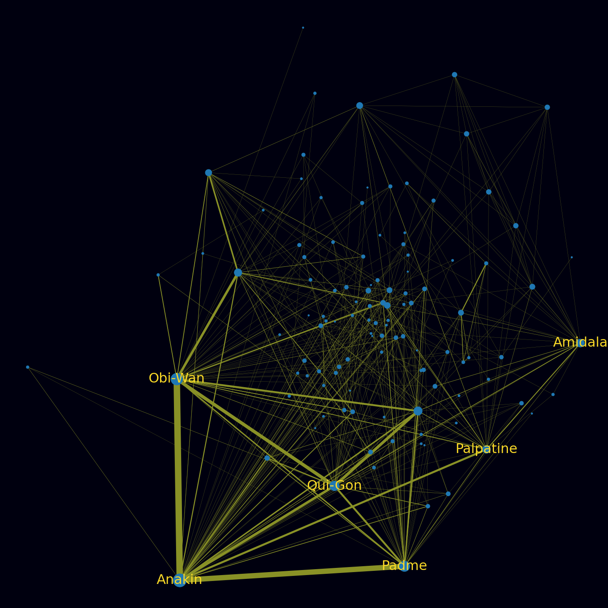
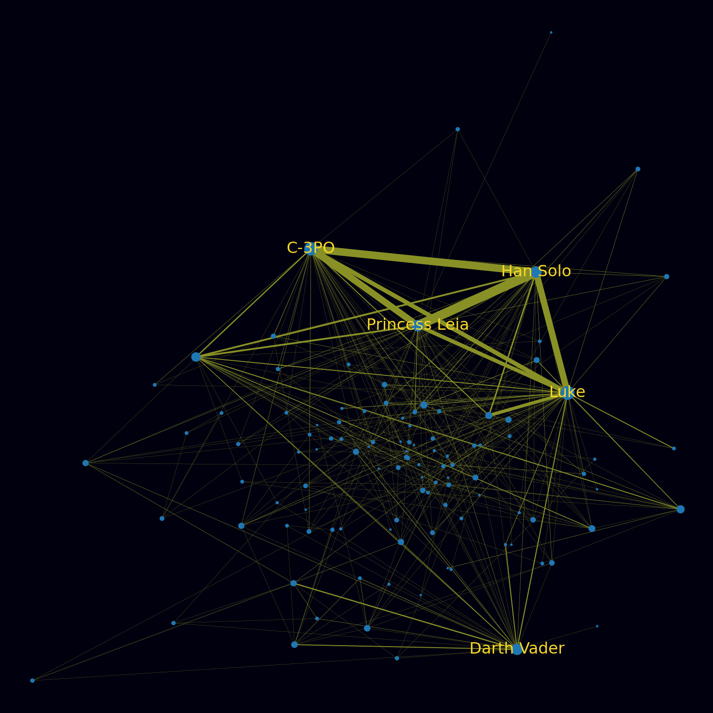
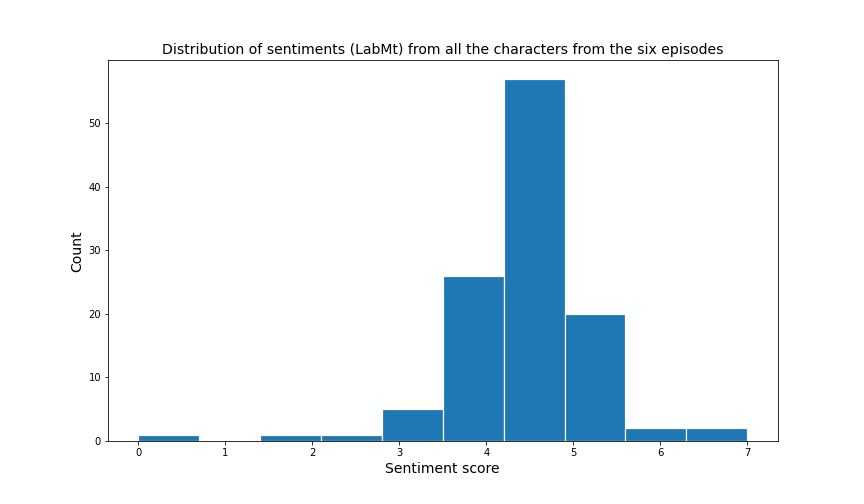
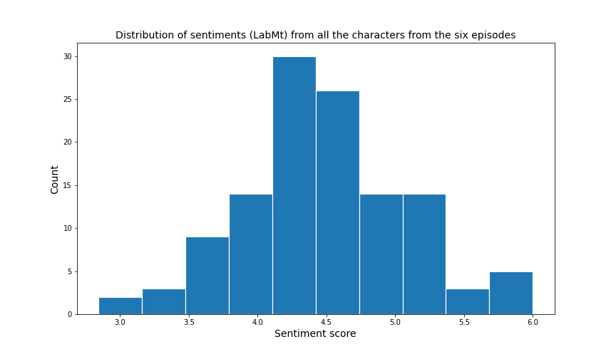
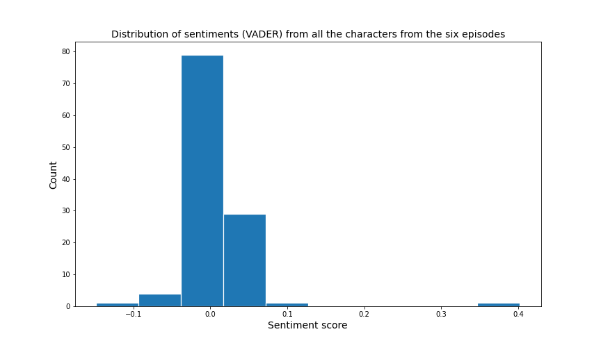
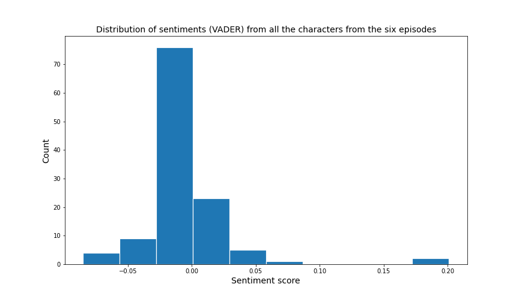

Download the data related to the scripts from here
After exploring the Wikia data source, we wanted to compare our results with scripts of the movies. So after downloading and processing the scripts we were able to extract the information needed to do the necessary analysis. The goals were to see if the extracted data from movie scripts were similar to the ones with the Wikia data source. Furthermore, we wanted to explore how much were the movies changed, so we splitted the movies into two trilogies in order to compare them.
One big network
In order to work with the movie scripts and as we didn’t had any data that would characterize someone individually, we splitted the movies into each scene and we created a network that would connect two nodes based on how many dialogues they had during the movie. As you can see from the graoh below, the bigger the line that connects two nodes, the more dialogues they had during the six movies.

The two clusters here are pretty obvious in contrast with the Wikia’s network. However, the network’s attribute are pretty similar which consists of 223 nodes and 1404 edges, with the number of communities being 23. In the specific network both the in-degree and the out-degree connections are the same, as it is an undirected graph.
| Degree Connections | |
|---|---|
| Anakin Skywalker | 68 |
| Obi-Wan | 52 |
| C3PO | 51 |
| Luke Skywalker | 48 |
| Padme | 41 |
| Qui-Gon | 35 |
| Leia | 33 |
| Darth Vader | 32 |
| Han Solo | 32 |
| Jar Jar | 27 |
As a result the degree centrality follows also the same order.
| Character | Degree Centrality |
|---|---|
| Anakin Skywalker | 0.3063 |
| Obi-Wan | 0.2342 |
| C3PO | 0.2287 |
| Luke Skywalker | 0.2162 |
| Padme | 0.1846 |
From these information, we can clearly see the biggest difference being Obi-Wan which is a vital character for the universe, but the results of the wikia page didn’t show.
Sentiment Analysis
For the sentiment analysis we followed the exact same procedure, we removed all nodes that had a degree less than 10, in order to explore the hapiness and sadness of more important characters. So after filtering out those characters, the results that were based on the lines that character said during the movies are the following:
| Happiest Character | LabMT | Saddest Character | LabMT |
|---|---|---|---|
| KITSTER | 5.0817 | JAR JAR | 3.4410 |
| BIGGS | 4.6671 | THREEPIO | 3.5629 |
| MAS AMEDDA | 4.6463 | HAN | 3.5954 |
| BAIL ORGANA | 4.5737 | LUKE | 3.6284 |
| TARKIN | 4.5390 | ANAKIN | 3.63184 |
The first thing that is easily observed is the difference between the scores of the LabMT. Here the values are higher resulting to happier characters. However, the pattern is the same. The more important the character the sadder he is.
| Happiest Character | VADER | Saddest Character | VADER |
|---|---|---|---|
| KITSTER | 0.053906 | BAIL ORGANA | -0.022283 |
| AMIDALA | 0.026763 | YODA | -0.01147 |
| BIGGS | 0.017163 | LUKE | -0.01023 |
| BAIL | 0.013782 | VADER | -0.00953 |
| QUIGON | 0.012798 | OFFICER | -0.00864 |
Regarding the results from VADER, the range of values is similar to the wikia’s and we can for sure validate that the most a character appears in a movie the lower his sentiment score gets, resulting to a universe of movies that is quite sad. This also can be observed during the movies, where the dark side influences a lot every character during the movies.
Lastly the distribution for all the characters can be seen in the plots below, which is much more concentrated with many characters showing the same behaviour.
| LabMT Distribution | VADER Distribution |
|---|---|
|  |  |
The Two Trilogies
To proceed further we thought we should distinguish the two trilogies and find out the differences how the movies might have changed. Regarding the network, the trilogies seem to have many similarities.
| Episodes I, II & III | Episodes IV, V & VI |
|---|---|
| Nodes: 115 | Nodes: 120 |
| Edges: 780 | Edges: 630 |
| Communities:10 | Communities: 18 |
|  |  |
Our main focus though, was to concentrate on the sentiment analysis for the two movies. So we first started by calculating the sentiment of LabMT and VADER for the whole trilogies.
| Episodes I, II & III | Episodes IV, V & VI |
|---|---|
| LabMT: 2.86599 | LabMT: 2.83683 |
| VADER: -0.00301 | VADER: -0.00733 |
However, all the results are quite the same which was unexpected due to the many years between the movies. The sentiment is quite the same, with the only difference in the LabMT distribution between the two trilogies.
| LabMT |
|---|
| Episodes I, II & III | Episodes IV, V & VI |
|---|---|
|  |  |
| VADER |
|---|
| Episodes I, II & III | Episodes IV, V & VI |
|---|---|
|  |  |